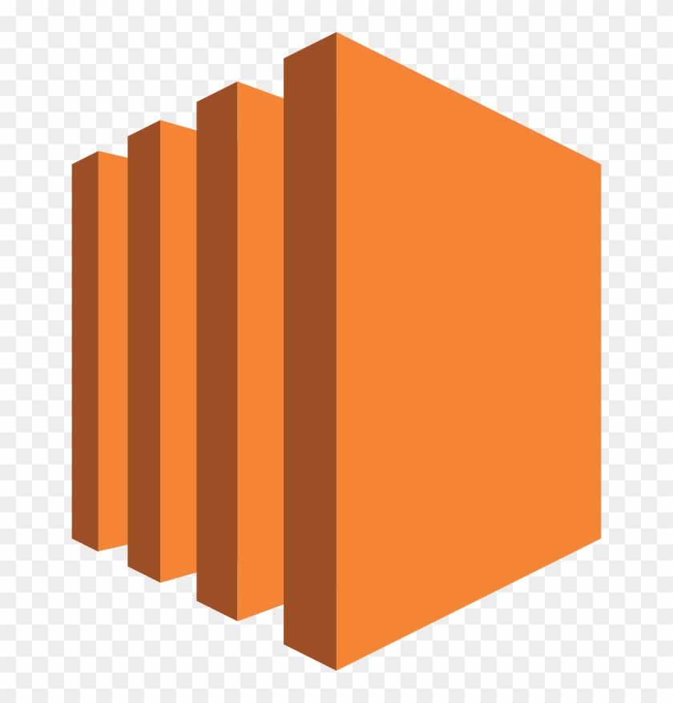

Carga Critica
El sistema pasa de reposo a maxima intensidad en ventanas muy cortas, especialmente en ventas relampago.
Presentacion academica
Arquitectura elastica, seguridad criptografica y persistencia administrada en AWS para procesar mas de 1 millon de transacciones diarias con picos de 30x.
La solucion debe responder en milisegundos durante eventos de alto trafico sin comprometer consistencia ni experiencia del usuario.
El sistema pasa de reposo a maxima intensidad en ventanas muy cortas, especialmente en ventas relampago.
Al tratarse de pagos, no se permite consistencia eventual. Cada transaccion debe ser atomica, consistente, aislada y durable.
Mantener tiempos de respuesta bajos reduce abandono de carrito y protege conversiones en picos de compra.
Combinamos persistencia administrada, balanceo inteligente y escalamiento horizontal para sostener la demanda extrema.

EC2 Auto ScalingEl nodo writer concentra pagos entrantes, mientras los reader endpoints absorben consultas de estado de cuenta e inventario.


Uso de llaves maestras para cifrar volumenes de base de datos y logs de transacciones (encryption at rest).
KMSIdentidades temporales para EC2, eliminando credenciales estaticas en codigo fuente.
IAMCifrado en transito entre ELB, EC2 y Aurora para proteger datos sensibles.
Cumplimiento financiero

Se fortalece la reputacion de marca al evitar caidas en eventos como Black Friday y temporadas de alto trafico.